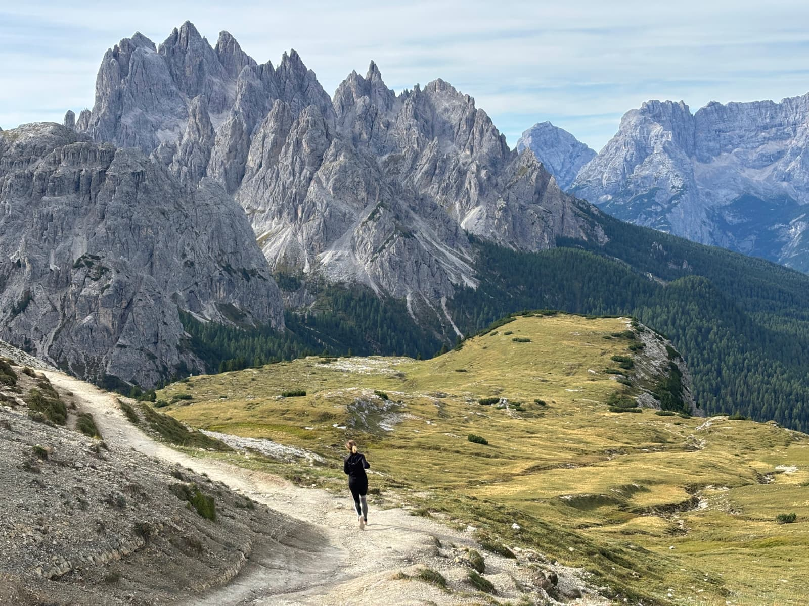
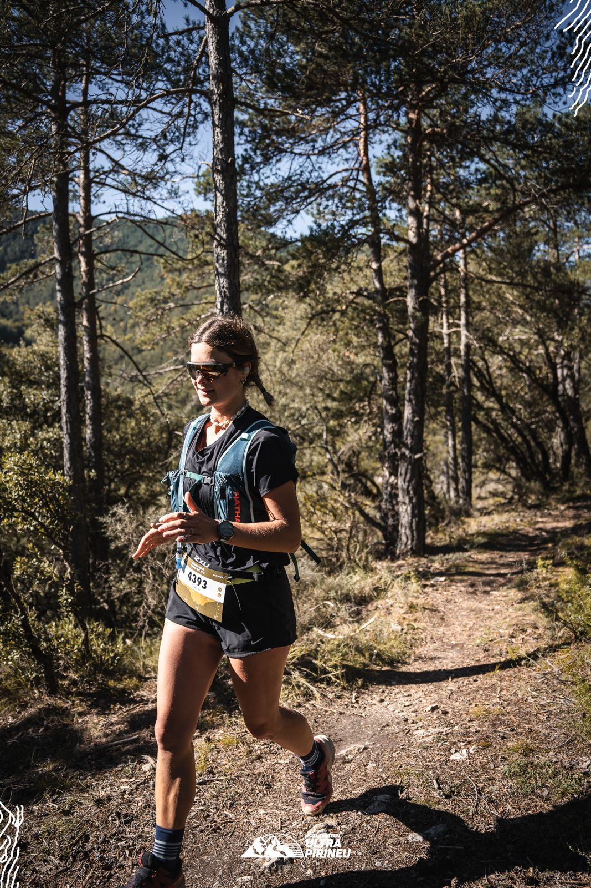
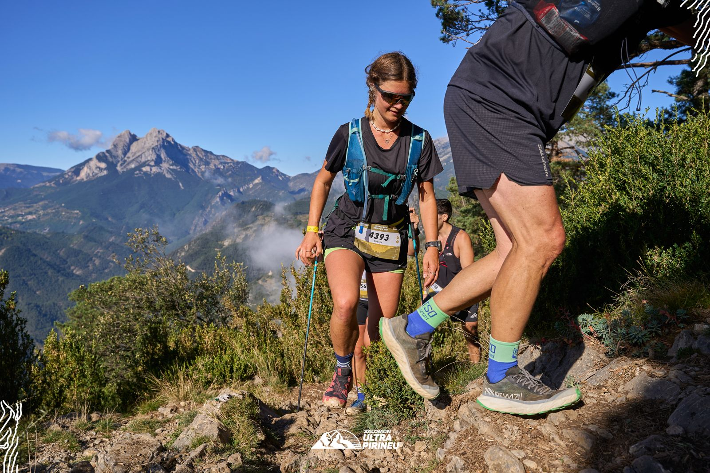

Computational Neuroscience & Abstract Cognition
DPhil Student · University of Oxford
I study how the brain uses structured internal models to plan, abstract, and generalise across tasks and environments. My research combines computational modelling with human fMRI, invasive electrophysiology, and rodent recordings to probe neural representations of future states.
Research
Neural representations of future states — DPhil project (2022–present)
I use multivariate analyses and model-based approaches to link human fMRI and iEEG (LFP & spikes) to mechanistic theories of higher cognition.
Selected publications
- Küchenhoff, S., Behrens, T.E.J., et al. Algorithmic representations underlying schema generalisation. Talks at CogSci (2025), RLDM (2024).
- Küchenhoff, S., Zsido, R.G., et al. Sex-bias in cortical and hippocampal microstructure. Nature Communications, 2024. [PDF]
- Contreras-Huerta, L.S., Pisauro, A., Küchenhoff, S., et al. Reward self-bias in foraging. Scientific Reports, 2024. [PDF]
- Küchenhoff, S., Doerflinger, J., Heinzelmann, N. Genetic technologies questionnaire. BMC Medical Ethics, 2022. [PDF]
Media
Paintings & Trails
In my free time, I like to be creative and spend time in the outdoors.


